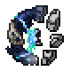

Welcome to the Official Terraria Origins Wiki!
A full catalog established and maintained by the Devs.
Forum Discord YouTube

What is Terraria Origins?
Terraria Origins is a fairly-sized content mod that enriches the vanilla Terraria experience with similar gameplay balance and likeness.
Origins adds content spanning all of Terraria's progression with a small portion after defeating the Moon Lord.
The main features of Origins include new enemies, biomes, an explosive-based Demolitionist class, songs for all of the content, and more that you can find on this wiki.
Thank you for showing interest in our project and we hope you have had a lot of fun with it!
***If you have questions about the wiki, it would be best to discuss it on the official discord found in the link above!
Main Mod: v0.4.4.4 (Open Beta)
Compatible with current tModLoader version.
{
header:'Items',
items:[
['Accessories', '§ModImage§/Items/Accessories/Lazy_Cloak'],
['Ammunition', '§ModImage§/Items/Weapons/Ammo/Alkaline_Harpoon'],
['Armor', 'ArmorSets/Blast_Armor_Female'],
['Banners', '§ModImage§/Tiles/Banners/Spider_Amoeba_Banner_Item'],
['Bars', '§ModImage§/Items/Materials/Eitrite_Bar'],
['Blocks', '§ModImage§/Tiles/Riven/Amoeba_Fluid_Item'],
['Consumables', '§ModImage§/Items/Other/Consumables/Mojo_Injection'],
['Crafting Stations', '§ModImage§/Tiles/Other/Fabricator_Item'],
['Dyes', '§ModImage§/Items/Other/Dyes/High_Contrast_Dye'],
['Furniture', '§ModImage§/Tiles/Riven/Riven_Dungeon_Chest_Item'],
['Materials', '§ModImage§/Items/Materials/Bleeding_Obsidian_Shard'],
['Minions', 'Cluesy'],
['Miscellaneous', '§ModImage§/Items/Other/Consumables/Nerve_Impulse_Manipulator'],
['Mounts', '§ModImage§/Items/Tools/Indestructible_Saddle'],
['Ores', '§ModImage§/Tiles/Other/Carburite_Item'],
['Pets', '§ModImage§/Items/Pets/Chromatic_Scale'],
['Statues', '§ModImage§/Tiles/Statues/Defiled_Mite_Statue_Item'],
['Tools', '§ModImage§/Items/Tools/Acrid_Hamaxe'],
['Vanity', '§ModImage§/Items/Armor/Vanity/Other/Sunflower_Sandal'],
['Walls', '§ModImage§/Walls/Riven_Flesh_Wall_Item'],
['Weapons', '§ModImage§/Items/Weapons/Demolitionist/Starburst'],
['Wings', '§ModImage§/Items/Other/Consumables/Blue_Bovine']
]
}
{
header:'Bosses and Mini Bosses',
items:[
{
header:'Mini Bosses:',
class:'miniheader inlineblock',
items:[
['Chambersite Sentinel', '§ModImage§/NPCs/MiscB/Chambersite_Sentinel_Head_Boss'],
['Grand Corruptor', '§ModImage§/NPCs/MiscB/Grand_Corruptor_Head_Boss'],
['Ichor Storm', '§ModImage§/NPCs/MiscB/Ichor_Storm_Head_Boss'],
['Zombie Paladin', '§ModImage§/NPCs/MiscB/Zombie_Paladin_Head_Boss']
]
},
{
header:'Pre-Hardmode:',
class:'miniheader inlineblock',
items:[
['Defiled Amalgamation', '§ModImage§/NPCs/Defiled/Boss/Defiled_Amalgamation_Head_Boss'],
['Fiberglass Weaver', '§ModImage§/NPCs/Fiberglass/Fiberglass_Weaver_Head_Boss'],
['Scrapper', '§ModImage§/NPCs/Ashen/Scrapper_Head_Boss'],
['World Cracker', '§ModImage§/NPCs/Riven/World_Cracker/World_Cracker_Head_Head_Boss']
]
},
{
header:'Hardmode:',
class:'miniheader inlineblock',
items:[
['Crimson King', '§ModImage§/NPCs/MiscB/Crimson_King_Head_Boss'],
['Lost Diver', '§ModImage§/NPCs/Brine/Lost_Diver_Head_Boss'],
['Mechamalgamation', '§ModImage§/NPCs/MiscB/Mechamalgamation_Head_Boss'],
['Miscreant', '§ModImage§/NPCs/MiscB/Miscreant_Head_Boss'],
]
},
{
header:'Post-Moon Lord:',
class:'miniheader inlineblock',
items:[
['I.C.A.R.U.S.', '§ModImage§/NPCs/MiscB/ICARUS_Head_Boss', 'ICARUS.html'],
['Quantux', '§ModImage§/NPCs/Cubekon/Quantux_Head_Boss']
]
}
]
}
{
header:'Mechanics',
items:[
['Aggro', '§ModImage§/Items/Accessories/Razorwire'],
['Assimilation', '§ModImage§/Buffs/Corrupt_Assimilation_Debuff'],
['Buffs', '§ModImage§/Buffs/Purifying_Buff'],
['Configuration options', 'Gear'],
['Curses', '§ModImage§/Items/Accessories/Forbidden_Voice'],
['Debuffs', '§ModImage§/Buffs/Toxic_Shock_Debuff'],
['Defiled Resurgence', '§ModImage§/Tiles/Defiled/Defiled_Stone_Item'],
['Fuse time', '§ModImage§/Items/Accessories/IWTPA_Standard'],
['Journal', 'Journal'],
['Mana Shielding', 'Refactoring_Pieces'],
'Modifiers',
['Quests', 'Exclamation_Point', 'Quests.html'],
['Rarity', '§ModImage§/Items/Accessories/Powerflower'],
['Recipe groups', 'Animations/Cycling_Herbs'],
['Stat Share', '§ModImage§/Items/Other/Consumables/Protean_Potion'],
['Stun', '§ModImage§/Items/Accessories/Lousy_Liver'],
]
}
{
header:'Biomes',
items:[
['Ashen Factory', '§ModImage§/UI/WorldGen/IconEvilAshen'],
['Brine Pool', '§ModImage§/UI/WorldGen/IconBrine'],
['Cubekon Temple', '§ModImage§/UI/WorldGen/IconQube'],
['Defiled Caverns', '§ModImage§/UI/IconStonerDefiled'],
['Defiled Wastelands', '§ModImage§/UI/WorldGen/IconEvilDefiled'],
['Eutrophic Sea', '§ModImage§/UI/IconEutrophicSea'],
['Fiberglass Undergrowth', '§ModImage§/UI/WorldGen/IconFiberglass'],
['Fractured Isles', 'Images/themes/theme-fracturedisles'],
['Riven Hive', '§ModImage§/UI/WorldGen/IconEvilRiven'],
['The Cosmos', 'Images/themes/theme-cosmos'],
['The Dawn', '§ModImage§/UI/WorldGen/IconDawn'],
['The Dusk', '§ModImage§/UI/WorldGen/IconDusk'],
['Underground Riven Hive', '§ModImage§/UI/IconStonerRiven']
]
}
{
header:'NPCs',
items:[
{
header:'Hardmode:',
class:'miniheader inlineblock',
items:[
['Brine Fiend', '§ModImage§/NPCs/TownNPCs/Brine_Fiend_Head'],
['Defiled Effigy', '§ModImage§/NPCs/TownNPCs/Defiled_Effigy_Head'],
['Dusk Trader', '§ModImage§/NPCs/TownNPCs/Dusk_Trader_Head']
]
},
{
header:'Post-Moon Lord:',
class:'miniheader inlineblock',
items:[
['Cubekon Tinkerer', '§ModImage§/NPCs/TownNPCs/Cubekon_Tinkerer_Head']
]
}
]
}
{
header:'Events',
items:[
{
header:'Hardmode:',
class:'miniheader inlineblock',
items:[
'Laser Tag',
'World Evil Invasion'
]
},
{
header:'Post-Moon Lord:',
class:'miniheader inlineblock',
items:[
'Test of the Ancients'
]
}
]
}
{
header:'Lore',
items:[
{
header:'Specific Vanilla Lore:',
class:'miniheader inlineblock',
items:[
'Floating Islands',
'Hell Cities',
'Lunatic Cult',
'Moon Lord',
'The Corruption',
'The Crimson',
'The Dungeon',
'The Hallow',
'The Lihzahrd',
'The World',
'Wall of Flesh'
]
},
{
header:'Specific Origins Additions:',
class:'miniheader inlineblock',
items:[
'Brine Pool and Lost Diver',
'Cubekon Tinkerer',
'Duskord',
'Mechamalgamation',
'Riven Hive and Primordial Amoeba',
'The Ashen',
'The Cubekons',
'The Dawn',
'The Defiled',
'The Dusk',
'The Fractured Isles',
'ICARUS Protocol'
]
},
{
header:'Chronology:',
class:'miniheader inlineblock',
items:[
'Genesis',
'Early Civilization',
'Prologue',
'Defeat of Bosses',
'Future Speculation'
]
}
]
}
{
header:'Resources',
items:[
'April Fools',
'Armor progression',
['Item synergies', '', 'Item_Synergies.html'],
'Concept art',
'Recipe finder',
['Vanilla changes', '', 'Changes.html'],
['Vanilla item recipes', '', 'Recipe_Changes.html']
]
}